ROS 2 + Ubuntu 22.04
ใช้จัดการองค์ประกอบของระบบหุ่นยนต์ การรับส่งข้อมูลระหว่างส่วนต่าง ๆ และการทำงานด้านการนำทาง
SOFTWARE / ROBOT FRAMEWORKหุ่นยนต์ขนส่งอัตโนมัติ
สำหรับการใช้งานภายในอาคาร
จากการออกแบบต้นแบบ สู่ระบบรับรู้สภาพแวดล้อม สร้างแผนที่ และนำทางด้วยเทคโนโลยี ROS 2
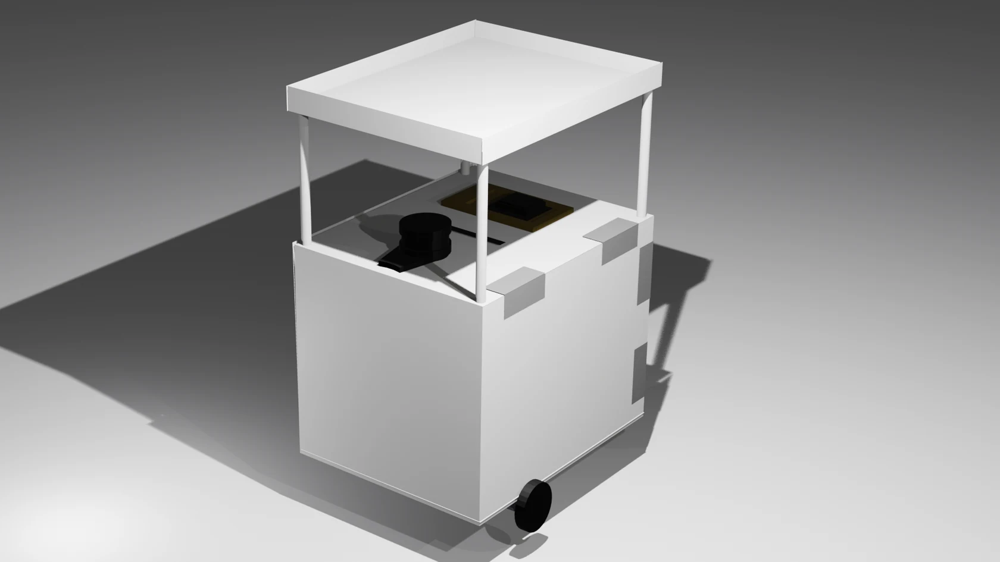
ROS Transport Robot คือโครงงานออกแบบและพัฒนาหุ่นยนต์ขนส่งสิ่งของภายในอาคาร โดยประยุกต์ใช้ระบบ ROS ในการควบคุมหุ่นยนต์และนำทางไปยังตำแหน่งที่กำหนด
โครงการมุ่งศึกษาการเคลื่อนที่อัตโนมัติ การตรวจจับสิ่งกีดขวาง และการสร้างแผนที่ เพื่อเป็นต้นแบบสำหรับลดภาระงานขนส่งและพัฒนาต่อยอดในอนาคต
ศึกษาและพัฒนาหุ่นยนต์เพื่อช่วยขนส่งสิ่งของภายในอาคาร
ออกแบบและสร้างหุ่นยนต์ที่เคลื่อนที่และขนส่งสิ่งของได้อย่างมีประสิทธิภาพ เพื่อลดภาระแรงงานมนุษย์
ศึกษาการทำงานของ Robot Operating System และการนำมาประยุกต์ใช้กับหุ่นยนต์ขนส่ง
การประสานงานระหว่างฮาร์ดแวร์ ระบบปฏิบัติการ และซอฟต์แวร์เพื่อสร้างระบบหุ่นยนต์ต้นแบบ
ใช้จัดการองค์ประกอบของระบบหุ่นยนต์ การรับส่งข้อมูลระหว่างส่วนต่าง ๆ และการทำงานด้านการนำทาง
SOFTWARE / ROBOT FRAMEWORKสแกนระยะและตรวจจับข้อมูลสภาพแวดล้อม เพื่อใช้สร้างแผนที่และช่วยระบุสิ่งกีดขวาง
PERCEPTION / LiDARใช้ควบคุมชุดมอเตอร์ผ่าน L298N ร่วมกับ Motor Encoder เพื่อจัดการการเคลื่อนที่ของหุ่นยนต์
HARDWARE / MOTOR CONTROLคอมพิวเตอร์ประมวลผลหลักของต้นแบบ เชื่อมต่อกับระบบ ROS และอุปกรณ์รับข้อมูลจากเซนเซอร์
COMPUTING / EMBEDDEDเครื่องมือพัฒนาเพิ่มเติม: PlatformIO, Visual Studio Code, NoMachine และ Blender
อุปกรณ์และซอฟต์แวร์ที่ใช้พัฒนา ROS Transport Robot — ภาพประกอบจากสไลด์โครงงาน
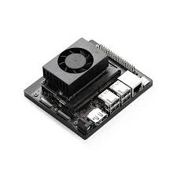
บอร์ดประมวลผลหลักสำหรับระบบ ROS ตามรายการอุปกรณ์ในโครงงาน
MAIN PROCESSING BOARD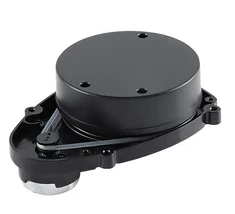
เซนเซอร์ตรวจวัดระยะเพื่อสร้างแผนที่และรับรู้สิ่งกีดขวาง
LASER DISTANCE SENSOR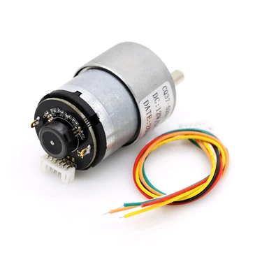
อ่านการหมุนของมอเตอร์เพื่อใช้ติดตามการเคลื่อนที่
MOTION FEEDBACK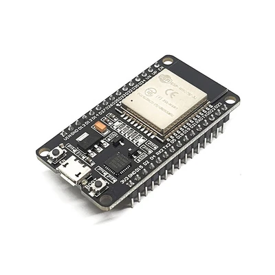
ไมโครคอนโทรลเลอร์สำหรับงานควบคุมการเคลื่อนที่
MICROCONTROLLER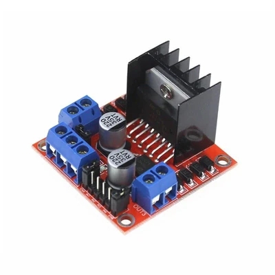
วงจรขับมอเตอร์สำหรับรับคำสั่งควบคุมการหมุน
MOTOR DRIVER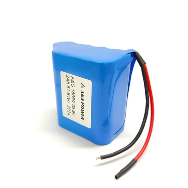
แหล่งจ่ายพลังงานให้กับส่วนประมวลผลและระบบเคลื่อนที่
POWER SOURCEระบบปฏิบัติการหลักสำหรับติดตั้งและใช้งาน ROS
OPERATING SYSTEMเฟรมเวิร์กสำหรับการสื่อสาร การควบคุม และระบบนำทางของหุ่นยนต์
ROBOT FRAMEWORKโปรแกรมแก้ไขโค้ดและพัฒนาซอฟต์แวร์ของโครงงาน
CODE EDITORเครื่องมือพัฒนาและอัปโหลดโปรแกรมไปยังไมโครคอนโทรลเลอร์
EMBEDDED DEVELOPMENTโปรแกรมเชื่อมต่อคอมพิวเตอร์ระยะไกลผ่านเครือข่าย
REMOTE DESKTOPโปรแกรมออกแบบและสร้างโมเดลโครงสร้างหุ่นยนต์สามมิติ
3D MODELINGลำดับหลักการทำงานตามที่อธิบายในรายงานและสไลด์โครงงาน
สแกนระยะและตรวจจับวัตถุรอบตัว
ประมวลผลข้อมูลเพื่อสร้างแผนที่
ประเมินตำแหน่งของหุ่นยนต์
วางเส้นทางไปยังเป้าหมายและหลีกเลี่ยงสิ่งกีดขวาง
ส่งคำสั่งควบคุมการเคลื่อนที่ผ่านระบบควบคุมมอเตอร์
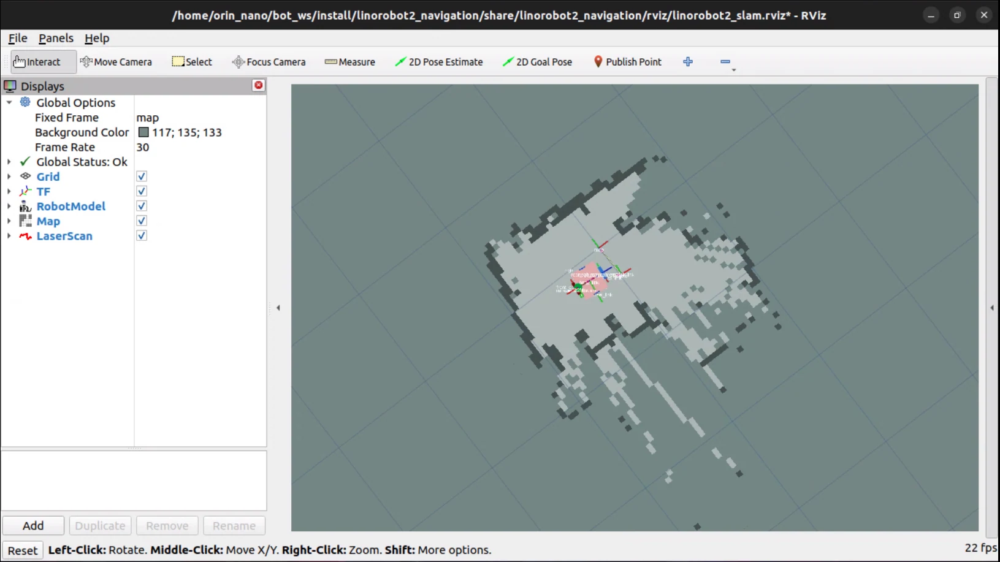
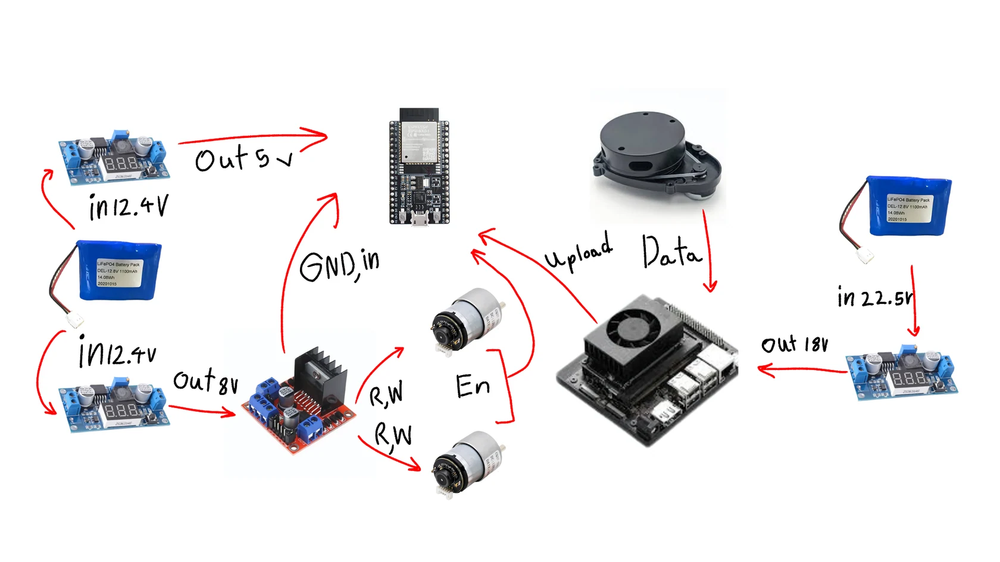
ภาพจากเอกสารรายงานและสไลด์โครงงาน ทั้งการออกแบบ การทดสอบ และการนำเสนอผลงาน
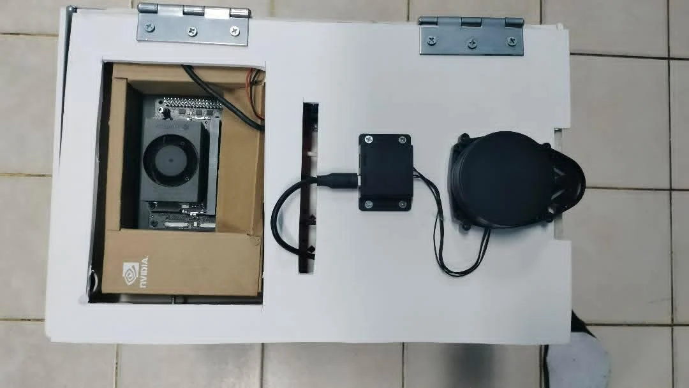
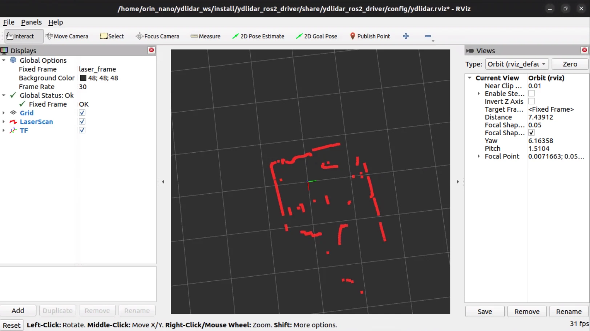
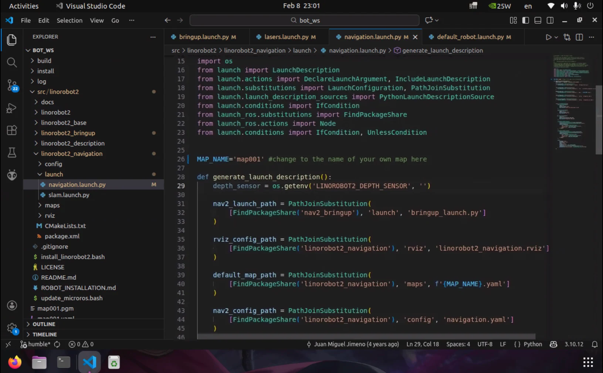
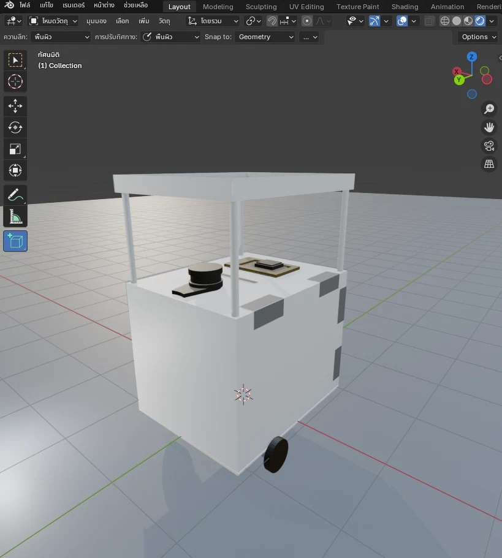
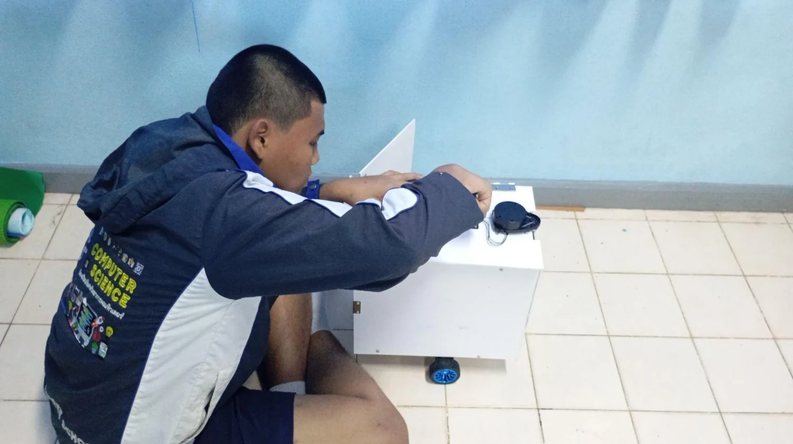
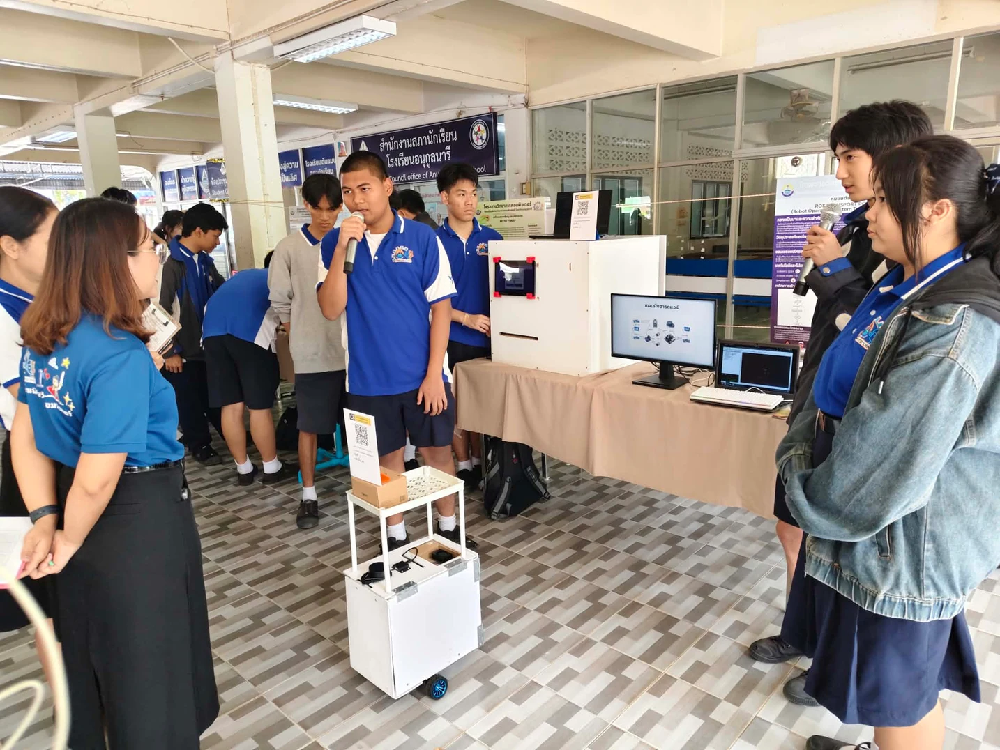
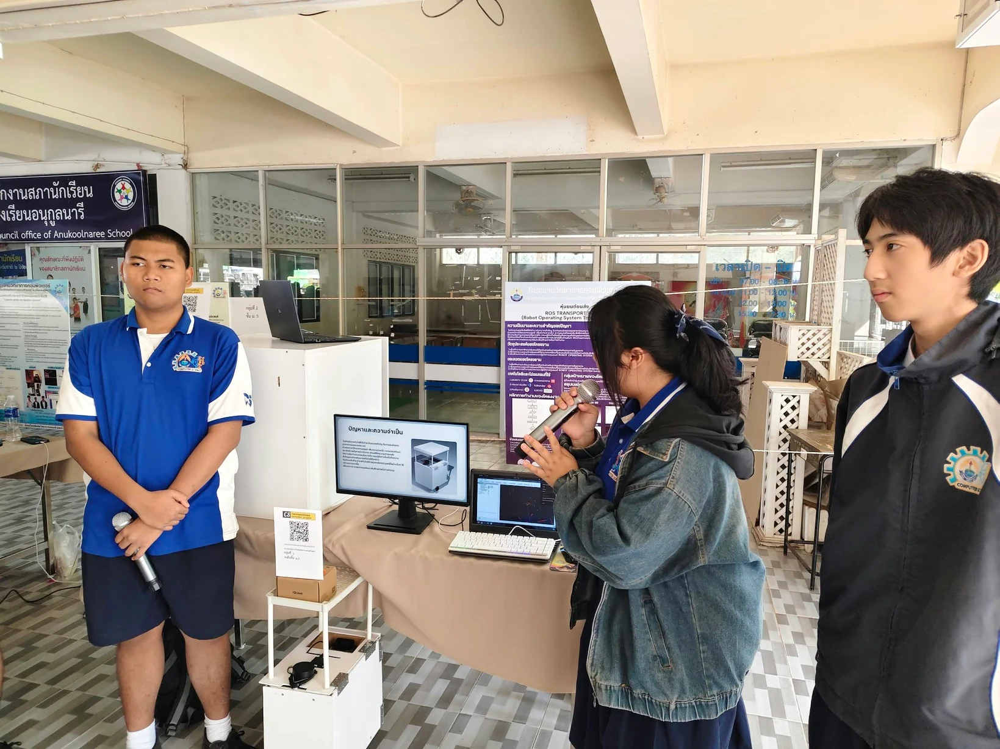
* สามารถเพิ่มรูปภาพใหม่ในหมวดหมู่นี้ได้ โดยทำตาม README ที่แนบมากับชุดเว็บไซต์
ตามรายงานฉบับสมบูรณ์ ต้นแบบสามารถรับคำสั่งควบคุมการเคลื่อนที่ ตรวจจับสภาพแวดล้อม และเคลื่อนที่ขนส่งสิ่งของไปยังจุดที่กำหนดได้
รายงานยังระบุข้อจำกัดเรื่องความเร็วที่เหมาะสมกับพื้นที่ และการนำทางในสภาพแวดล้อมที่ซับซ้อน ซึ่งเป็นโจทย์สำคัญสำหรับการพัฒนาต่อไป
ดูผลการทดลองในรายงานฉบับเต็ม ↗โปสเตอร์สรุปที่มา วัตถุประสงค์ อุปกรณ์ การทำงาน ภาพประกอบ และผลสรุปของ ROS Transport Robot
เปิดดูโปสเตอร์เต็มขนาด ↗POSTER / 2025–2026 ACADEMIC PROJECT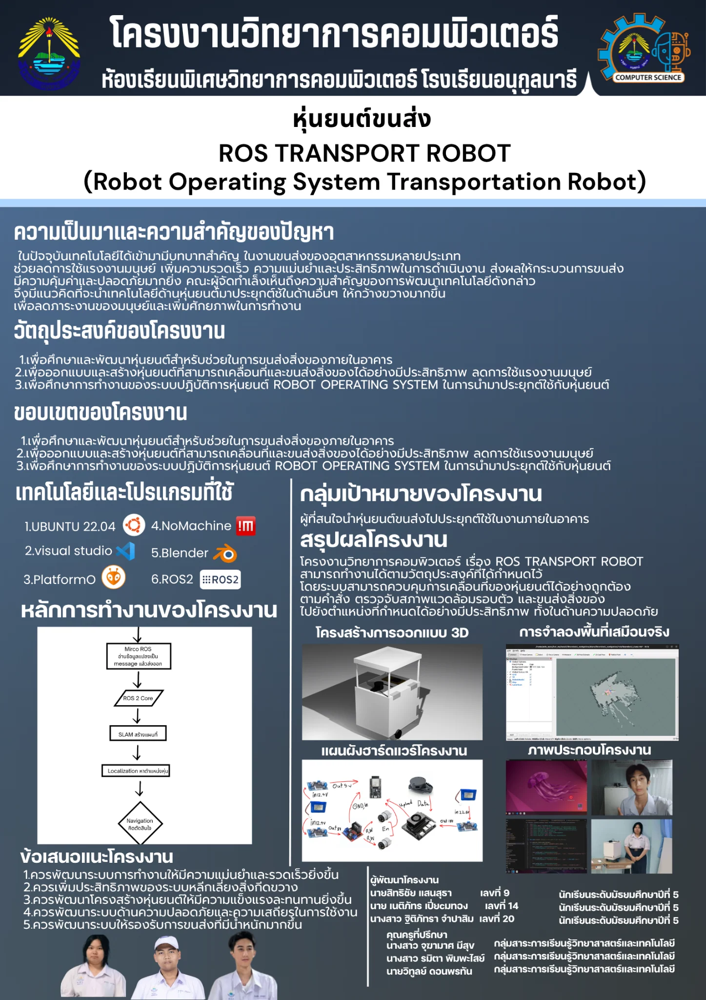